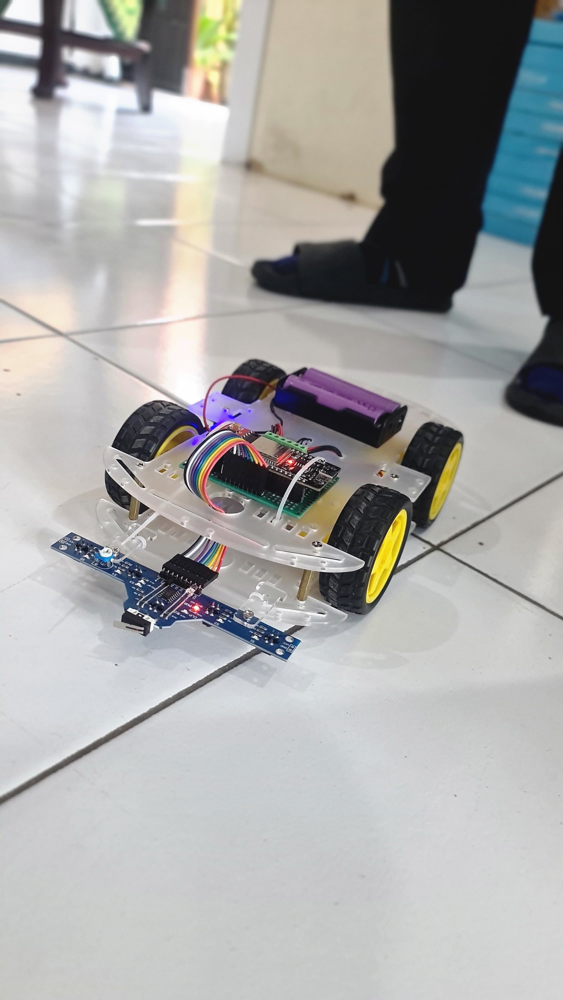

PROYEK IOT & ROBOTIKA
Teknologi seru,
dibuat bergerak.
Kenalan dengan Smart RC Car berbasis ESP32—mobil pintar yang bisa dikendalikan dari ponsel melalui jaringan Wi-Fi lokal.
Dirakit untuk belajar. Siap untuk melaju.

ESP32Wi-Fi control
01 Kendali lewat browser
02 Jaringan Wi-Fi lokal
03 Rakit, pelajari, kembangkan
JELAJAHI PROYEK
Mulai dari sini.
Semua yang ingin kamu tahu tentang mobil pintar ini, ada di sini.
01 / PENGENALAN
Tentang Proyek
Tujuan dan cerita di balik Smart RC Car berbasis ESP32.
02 / CARA KERJAPrinsip Kerja
Ikuti perjalanan perintah dari ponsel hingga motor bergerak.
03 / DOKUMENTASIGaleri
Lihat lebih dekat dokumentasi proses dan hasil rakitan.
04 / PERAKITANBahan & Alat
Kenali komponen dan alat yang dibutuhkan untuk merakit.
05 / PEMROGRAMANKode ESP32
Temukan sketch dan petunjuk untuk mulai mencoba.
SIAP MELIHAT LEBIH DEKAT?